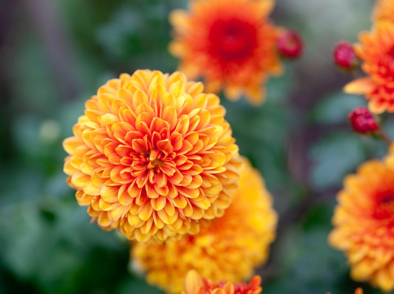
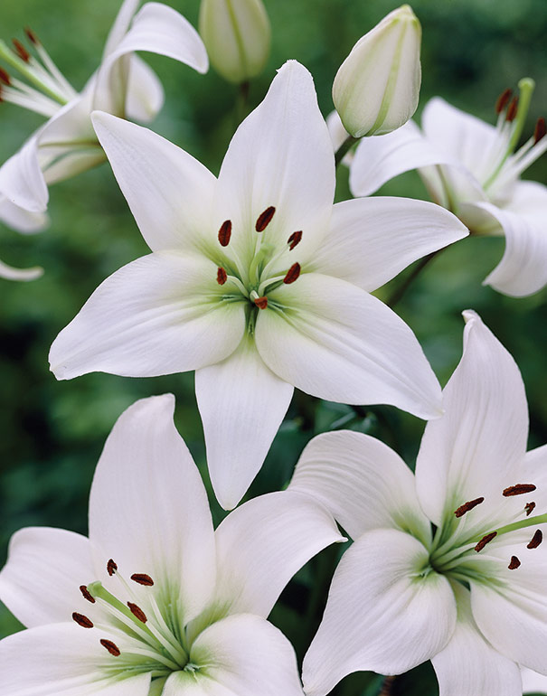
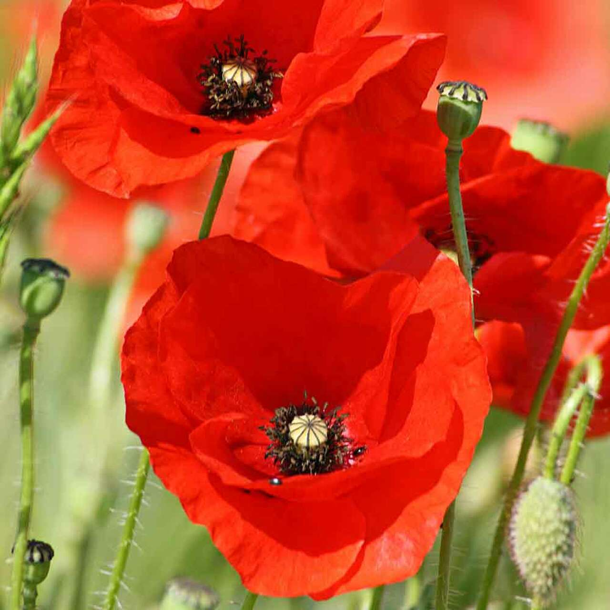
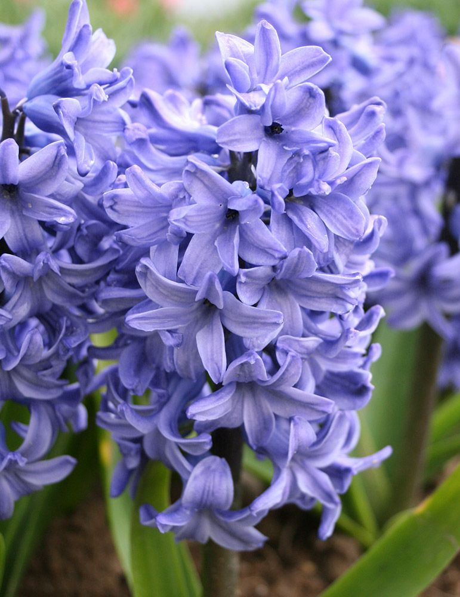

Pretty Flowers
There you go some pretty & girly Flowers:)

This Flower name is Chrysanthemum.
The name "chrysanthemum" is derived from the Ancient Greek: chrysos (gold) and Ancient Greek: anthemon (flower).
Chrysanthemum cultivation began in Japan during the Nara and Heian periods (early 8th to late 12th centuries),
and gained popularity in the Edo period (early 17th to late 19th century).
Many flower shapes, colours, and varieties were created.

This is Lily.
Lilies are tall perennials ranging in height from 2–6 ft (60–180 cm).
The flowers are large, often fragrant, and come in a wide range of colors including whites,
yellows, oranges, pinks, reds and purples.
Markings include spots and brush strokes.
The plants are late spring- or summer-flowering.
Lilies are used as food plants by the larvae of some Lepidoptera species.
They are so girly as well as pretty too !

This is Poppy .
A poppy is a flowering plant in the subfamily Papaveroideae of the family Papaveraceae. Poppies are herbaceous plants, often grown for their colourful flowers. One species of poppy, Papaver somniferum, is the source of the narcotic drug opium which contains powerful medicinal alkaloids such as morphine and has been used since ancient times as an analgesic and narcotic medicinal and recreational drug. It also produces edible seeds. Following the trench warfare in the poppy fields of Flanders, Belgium during World War I, poppies have become a symbol of remembrance of soldiers who have died during wartime.
Poppies are herbaceous annual, biennial or short-lived perennial plants. Some species are monocarpic, dying after flowering. Poppies can be over a metre tall with flowers up to 15 centimetres across. Flowers of species (not cultivars) have 4 or 6 petals, many stamens forming a conspicuous whorl in the center of the flower and an ovary of from 2 to many fused carpels.

This is Hyacinth .
Hyacinthus grows from bulbs, each producing around four to six linear leaves and one to three spikes or racemes of flowers.
In the wild species, the flowers are widely spaced with as few as two per raceme in H. litwinovii and typically six to eight in H.
orientalis which grows to a height of 15–20 cm (6–8 in). Cultivars of H. orientalis have much denser flower spikes and are generally more robust.
The Dutch, or common hyacinth of house and garden culture
Hyacinths are often associated with spring and rebirth. The hyacinth flower is used in the Haft-Seen table setting for the Persian New Year celebration, Nowruz, held at the Spring Equinox.
The color of the blue flower hyacinth plant varies between 'mid-blue', violet blue and bluish purple. Within this range can be found Persenche, which is an American color name (probably from French), for a hyacinth hue.
The color analysis of Persenche is 73% ultramarine, 9% red and 18% white.
Follow Us :